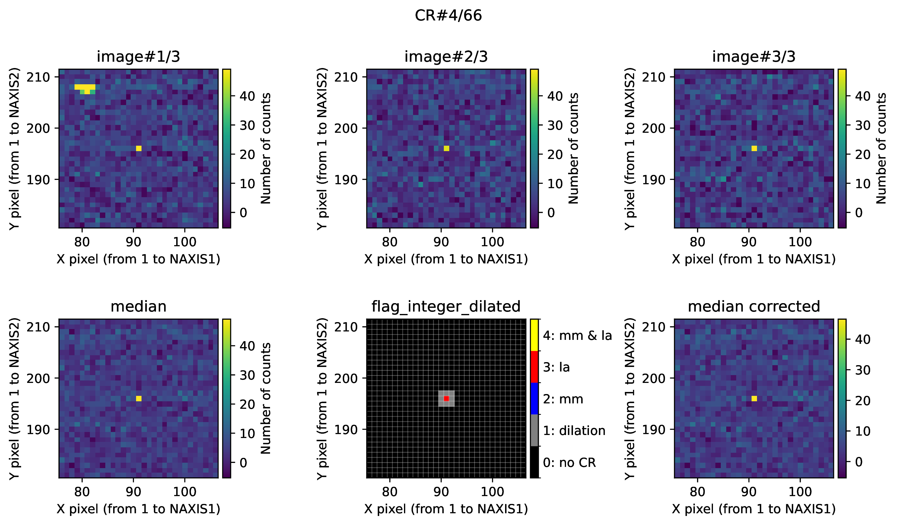
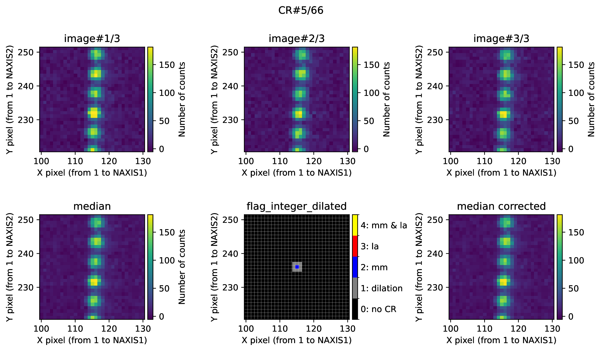
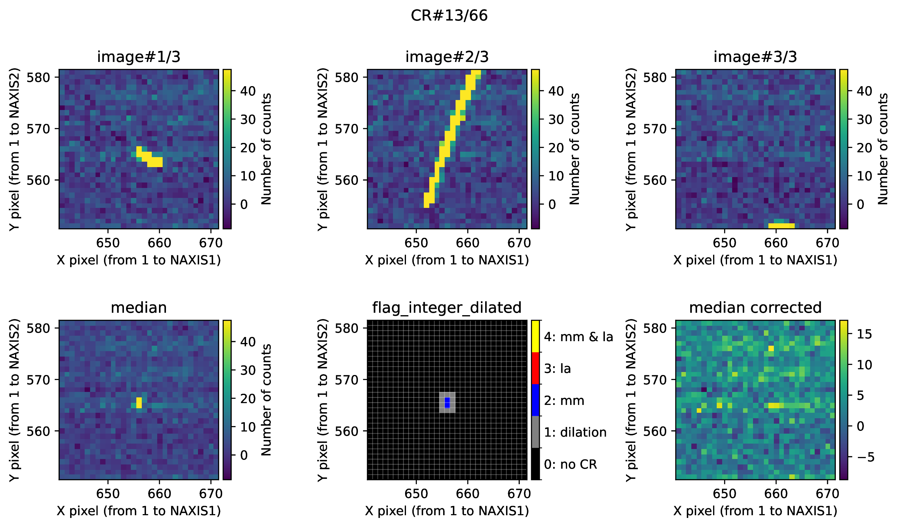

Removing CR in multiple exposures
A common task in astronomical image reduction is the removal of cosmic rays. To facilitate this process, it is customary (when possible) to acquire three or more equivalent exposures, allowing a median combination to effectively eliminate the cosmic rays. However, this approach does not perform optimally when exposure times are long and the number of cosmic rays is high, as the same pixel may be affected by a cosmic ray in more than one exposure. Under such circumstances, the median combination removes most cosmic rays from the final image, but residual pixels may remain that have not been properly corrected.
We have encountered this issue while reducing observing blocks performed with the instrument MEGARA at the GTC. Each of these observing blocks consists of three identical science exposures, taken with the same exposure time and maintaining telescope pointing through an autoguiding system.
Overall description
Note
Since the issue of astronomical images being heavily affected by cosmic rays is typically restricted to long-exposure observations, it is uncommon to have significantly more than three equivalent exposures available. If four exposures are obtained, a median combination still fails to correct cases where a pixel is affected by cosmic rays in two of the exposures. In such scenarios, increasing the number of exposures from three to five becomes necessary. However, having five or more truly equivalent exposures is not trivial, as long integration times may lead to variations in the signal (e.g., changes in airmass and/or atmospheric transmission, sky line intensity, pointing variations, or instrument flexures, among other possible issues), making it unreasonable to assume that the images are reasonably equivalent. On the other hand, if a particular observing program does allow for a larger number of exposures (five or more), then a median combination may yield satisfactory results, and the method described below may not be required. For all these reasons, the following description assumes that the number of available exposures is three.
The method described here should be applied when three (or more) equivalent exposures are available. It works by identifying pixels where the signal has been affected by cosmic rays in more than half of the available exposures, such that the median combination still retains an erroneous signal. These pixels are identified in the median-combined image using two distinct procedures, which can also be combined to enhance the effectiveness of the detection process:
The L.A. Cosmic technique (van Dokkum 2001), a robust algorithm for cosmic-ray detection, based on a variation of Laplacian edge detection. Here we are using the implementation of this algorithm provided by the Python package ccdproc through the \(\color{gray}\texttt{cosmicray_lacosmic()}\) function, which in turn is based on the implementation provided by the Astro-SCRAPPY package (McCully 2014). This algorithm is widely used for detecting cosmic rays in individual exposures. In our case, it serves to identify residual cosmic-ray pixels in the median combination, which likely correspond to pixels suspected of having been hit by a cosmic ray in two out of the three available exposures. In this document, we will refer to this method in abbreviated form as \(\color{red}\textbf{LAcosmic}\).
The Median-Minimum (MM) diagnostic diagram technique (Cardiel et al. 2025, in preparation), an alternative method that works by identifying pixels that deviate unexpectedly in a diagnostic diagram constructed using the median and minimum signal values of each pixel across the different exposures. This algorithm is based on the assumption that the gain and readout noise of the detector are known with reasonable accuracy. This allows for the prediction of the typical difference between the median and the minimum signal values recorded in the same pixel across the three different exposures, as a function of the minimum signal (once the bias level has been subtracted). With the aid of numerical simulations, a detection boundary is predicted in the MM diagnostic diagram, such that pixels falling above this boundary ave a high probability of having been affected by cosmic rays in two out of the three available exposures. In this document, we will refer to this method in abbreviated form as \(\color{blue}\textbf{MMcosmic}\).
Script usage
Warning
This functionality is still in the development phase and is not yet fully consolidated. Some future modifications may be introduced as more testing is conducted with new images.
The numina script responsible for detecting and correcting residual cosmic rays using the methods \(\color{red}\textbf{LAcosmic}\) and or \(\color{blue}\textbf{MMcosmic}\) is called numina-crmasks. Its execution is straightforward:
(venv_numina) $ numina-crmasks params_example1.yaml
The script numina-crmasks takes a single initial argument: the name of a YAML-formatted file. This file facilitates providing default values for multiple parameters, allowing the user to focus only on modifying a subset of them to experiment with how changes affect the results.
Note: YAML is a human-readable data serialization language (for details, see YAML syntax description.
An example of a params_example1.yaml file is shown below and available
here:
1#------------------------------------------------------------------------------
2# YAML file with parameters for numina-crmasks
3#------------------------------------------------------------------------------
4# List of input images
5images:
6 - test_1.fits
7 - test_2.fits
8 - test_3.fits
9extnum: 0 # extension number (0: primary)
10#------------------------------------------------------------------------------
11# General parameters
12gain: 1.0 # conversion electron/ADU
13rnoise: 3.4 # readout noise (ADU)
14bias: 0.0 # (ADU)
15#------------------------------------------------------------------------------
16#------------------------------------------------------------------------------
17requirements:
18 crmethod: mm_lacosmic # lacosmic | mmcosmic | mm_lacosmic
19 use_lamedian: False # use LAMEDIAN insteand of minimum value
20 interactive: True # display and pause between plots
21 flux_factor: none # none | auto | [list of values]
22 flux_factor_regions: # list of regions, FITS criterium
23 # - [xmin, xmax, ymin, ymax] # <-- format (no need to uncomment this)
24 apply_flux_factor_to: simulated # original | simulated (data)
25 dilation: 1 # dilation around suspected pixels (integer)
26 regions_to_be_skipped: # list of regions, FITS criterium
27 # - [xmin, xmax, ymin, ymax] # <-- format (no need to uncomment this)
28 pixels_to_be_flagged_as_cr: # FITS criterium, first pixel is [1, 1]
29 # - [X, Y] # <-- format (no need to uncomment this)
30 pixels_to_be_ignored_as_cr: # FITS criterium, first pixel is [1, 1]
31 # - [X, Y] # <-- format (no need to uncomment this)
32 pixels_to_be_replaced_by_local_median: # FITS criterium
33 # - [X, Y, X_width, Y_width] # <-- format (no need to uncomment this)
34 verify_cr: False # ask for confirmation
35 semiwindow: 15 # to display residual CR hits
36 color_scale: minmax # minmax | zscale
37 maxplots: -1 # -1: all CR detected are plotted
38 #-----------------------------------------------------------------------------
39 # Parameters for L.A. Cosmic (van Dokkum 2001), as implemented in ccdproc
40 # (based in https://github.com/astropy/astroscrappy).
41 # https://ccdproc.readthedocs.io/en/latest/api/ccdproc.cosmicray_lacosmic.html
42 la_gain_apply: True # Return gain-corrected data
43 la_sigclip: 5.0 # Laplacian-to-noise limit for cosmic ray detection
44 la_sigfrac: 0.3 # Fractional detection limit for neighboring pixels
45 la_objlim: 5.0 # Contrast between Laplacian and fine struct. images
46 la_satlevel: 65535.0 # Saturation level of the image (ADU)
47 la_niter: 4 # Number of iterations to perform
48 la_sepmed: True # Use the separable median filter (not the full filter)
49 la_cleantype: meanmask # median | medmask | meanmask | idw
50 la_fsmode: convolve # median | convolve
51 la_psfmodel: gaussxy # gauss | moffat | gaussx | gaussy | gaussxy
52 la_psffwhm_x: 2.5 # FWHM of the PSF (X direction) to generate the kernel
53 la_psffwhm_y: 2.5 # FWHM of the PSF (Y direction) to generate the kernel
54 la_psfsize: 11 # size of the kernel
55 la_psfbeta: 4.765 # Moffat beta parameter
56 la_verbose: True # Print to the screen or not
57 #-----------------------------------------------------------------------------
58 # Parameters for the Median-Minimum method (Cardiel et al. 2025)
59 # rectangular region to determine offsets between individual images:
60 mm_crosscorr_region: null # [xmin, xmax, ymin, ymax] FITS criterium | null
61 mm_boundary_fit: spline # piecewise | spline
62 mm_knots_splfit: 3 # used only for spline fit
63 mm_fixed_points_in_boundary:
64 # - [x, y, weight] # weights are optional(ignored) for spline(piecewise) fit
65 mm_nsimulations: 5 # simulations for each set of images
66 mm_niter_boundary_extension: 3 # iterations to extend the spline fit
67 mm_weight_boundary_extension: 10.0 # multiplicative increment in weigth
68 mm_threshold: 0.0 # minimum median2d - min2d value
69 mm_minimum_max2d_rnoise: 5.0 # minimum max2d (in readout units)
70 mm_seed: 123456 # random seed for reproducibility
71 #----------------------------------------------------------------------------
Indentation in a YAML file is extremely important (it’s one of the core
parts of how YAML defines structure). YAML uses spaces (not tabs) to represent
nesting or parent-child relationships between data elements. It is possible to
insert comments using the # (hash) symbol, so that everything on the same
line after # is ignored by the YAML parser.
In our case, at the top level there are six parameters (highlighted with a yellow background in the example above):
images: List of input FITS images to be processed. Each single image is provided below this keyword, in an indented line, starting with a dash followed by a space and the name of the corresponding FITS file.extnum: Extension number of the FITS file to be read (e.g.,0for the primary extension).gain,rnoiseandbias: General image parameters such as detector gain (electron/ADU), readout noise (ADU), and bias level (ADU). In this file we are using the parameters corresponding to some preprocessed MEGARA exposures, where the bias level has already been subtracted, and the signal has been converted to electrons (for this reason we are usingbias=0andgain=1.0).requirements: under this section, there are three parameter blocks:1. General execution parameters: They control the overall behavior of numina-crmasks.
2. Parameters for the \(\color{red}\textbf{LAcosmic}\) technique: Identified by the
la_prefix, these parameters configure the Laplacian Cosmic Ray Detection Algorithm (van Dokkum 2001). Some default values are provided. These parameters, without thela_prefix, are transferred to the \(\color{gray}\texttt{cosmicray_lacosmic()}\) function.3. Parameters for the \(\color{blue}\textbf{MMcosmic}\) method: Identified by the
mm_prefix, these control the computation of the detection boundary in the MM diagnostic diagram.
A more detailed description of all the parameters included in the
requirements section is provided in the description of parameters in
requirements section below.
Note
Users of the MEGARA data reduction pipeline will recognize the above
requirements section as the same one found in the observation result
YAML file used by the reduction recipe MegaraCrDetection. This means
that the entire section of the params.yaml file starting from line 17
onward, can be inserted into the observation result file of the
corresponding recipe. For further details, see CR not removed by median
stacking in
the MEGARA cookbook.
Script output
After executing the code (several examples are shown below), the numina-crmasks script generates several FITS files:
combined_mediancr.fits: Median combination of the three available exposures, replacing pixels suspected of being affected by cosmic rays in two of the three exposures by the minimum value at each pixel across the three available exposures. When the replaced pixels truly correspond to cases where the same pixel has been affected by a cosmic ray in two out of the three available exposures, using the minimum value is effectively equivalent to relying on a single exposure. In such cases, there is no reason to assume that this value is biased toward lower-than-expected levels, since only a single measurement is available.Instead of using the minimum value at each pixel, it is also possible to replace the flagged pixels using the value computed by the \(\color{gray}\texttt{cosmicray_lacosmic()}\) function. To do so, you must set the parameter
use_lamedian=True(which is not the default) and pay attention to the parameterla_cleantype.combined_meancrt.fits: First attempt to perform a mean (not median!) combination of the three available individual exposures. First, a direct mean combination of the original exposures is computed, resulting in an image that contains all cosmic rays present in the individual frames. A mask of pixels affected by cosmic rays is then generated from this image, and the pixels within this mask are replaced with their corresponding values from thecombined_mediancr.fitsimage.combined_meancr.fits: Second attempt to obtain a mean combination of the three available exposures. In this case the combination is obtained by generating an individual cosmic ray mask for each of the three initial exposures. A mean combination is then performed using each image along with its corresponding mask. Finally, the masked pixels in the three exposures are replaced by the minimum value.
Each of these FITS contains the combined image in the primary extension, along with two additional extensions: one storing the variance (extension VARIANCE), and another containing the pixel map (number of single exposures employed to compute the combined result for each pixel).
(venv_numina) $ fitsinfo combined_me*fits
Since the mean has a lower standard deviation than the median, the
combined_meancrt.fits and combined_meancr.fits images are initially
preferable. Among these two, tests suggest that combined_meancr.fits tends
to yield better results. However, it is recommended to try all three methods
and compare the outputs to determine which works best for your specific
dataset.
In addition to the three images described above, the numina-crmasks script also generates an additional FITS file that compiles the masks and auxiliary data used to produce the various image combinations previously discussed.
crmasks.fits: FITS file containing 5 cosmic ray masks, each one stored in a different extension.
(venv_numina) $ fitsinfo crmasks.fits
In this case, the primary extension does not contain an image, but rather a small set of parameters stored as FITS keywords, along with the parameters used during the execution of the numina-crmasks script (which are recorded in the HISTORY section of this primary header). Extensions 1 through 5 contain five masks:
\(\color{magenta}\texttt{MEDIANCR}\): mask employed to generate the
combined_mediancr.fitsresult.\(\color{magenta}\texttt{MEANCRT}\): mask employed to generate the
combined_meancrt.fitsresult. In this case, pixels already flagged in \(\color{magenta}\texttt{MEDIANCR}\) are also flagged in this second mask.\(\color{magenta}\texttt{CRMASK1}\), \(\color{magenta}\texttt{CRMASK2}\) and \(\color{magenta}\texttt{CRMASK3}\): individuals masks associated to each of the three individual exposures, which are employed to generate the
combined_meancr.fitsresult. In this case, pixels are only flagged when they were so in the \(\color{magenta}\texttt{MEANCRT}\) mask (the mean combination should be less noisy than the individual exposures, so by imposing this restriction we help reducing the number of false positives).
In all cases, these masks store values of 0 and 1, corresponding respectively to pixels unaffected and affected by cosmic rays.
Example
The images used in the following examples correspond to a cropped region from frames obtained with the MEGARA instrument, a fiber fed Integral Field Unit installed at the Gran Telescopio Canarias. The three exposures have an integration time of 1200 seconds each, and all of them contain a high number of cosmic rays. The images have been preprocessed (bias subtracted and gain scale corrected). A simple median combination of the three images initially performs well, but as we will see below, it leaves several dozen pixels uncorrected due to cosmic ray hits occurring in the same pixel in two out of the three available exposures.
In these MEGARA images, the spectral direction lies along the horizontal axis, and the spectra from the different fibers are distributed along the vertical axis.
Note
Although the examples shown below demonstrate a highly interactive execution of the numina-crmasks script, the intended design allows the program to be run in a largely automated manner when needed. This may be the case in observational projects where the detector parameters (gain, readout noise) remain constant, and where, after interactively determining optimal parameters for residual cosmic ray removal on a subset of images, the same configuration can be applied to a larger set of similarly acquired frames using the same instrumental configuration.
Simple execution
In this example, we will use crmethod: mm_lacosmic,
which means that cosmic-ray pixels will be detected using both the
\(\color{red}\textbf{LAcosmic}\) and the \(\color{blue}\textbf{MMcosmic}\)
methods. We will consider a pixel to contain spurious signal due to a cosmic
ray hit when it is detected by either of the two methods, and not necessarily
by both simultaneously.
We start this example making use of the file
params_example1.yaml:
(venv_numina) $ numina-crmasks params_example1.yaml
After a short processing time, numina-crmasks starts applying the \(\color{red}\textbf{LAcosmic}\) technique to detect residual cosmic rays in the median combination.
In this example 28 pixels are flagged as suspicious of being affected by cosmic rays.
Next, the program begins applying the \(\color{blue}\textbf{MMcosmic}\) method in the median combination.
In this process a 3D stack is built from the available individual exposures.
The minimum, maximum, and median values of each pixel across the three
available exposures are computed, resulting in three 2D images referred to as
min2d, max2d, and median2d, respectively. Naturally, these images have
the same dimensions as the original exposures being combined.
Using the information stored in the median2d and min2d images, the
program constructs a diagram that plots the difference between median2d and
min2d against the value of min2d (after subtracting the bias signal). We
will refer to this graphical representation as the Median-Minimum (MM for
short) diagnostic diagram.
Since we are using interactive=True, the corresponding MM diagnostic diagram
is displayed interactively, allowing the user to examine it in real time (this
figure is also saved as diagnostic_histogram2d.png).

Fig. 1 Simulated (left) and real (right) Minimum-Median diagnostic diagram.
The MM diagnostic diagram displayed above is actually a 2D histogram, and it is shown in two panels:
Left Panel: This shows the result of a predefined number of simulations (
mm_nsimulations: 5in this example). En each simulation, the program employs the originalmedian2dimage to generate 3 synthetic exposures, based on the provided values for gain, readout noise, and bias.Right Panel: This shows the same diagnostic diagram, but using the actual data from the individual exposures.
Returning to the left panel, for each bin along the horizontal axis, the
corresponding 1D histogram in the vertical direction is converted into a
cumulative distribution function (CDF). The red crosses mark the values of
median2d - min2d where the probability of finding a pixel above that value
is low enough that only one such pixel is expected. An initial spline (blue
curve) is fitted through these red crosses.
To define a more conservative detection boundary, the blue curve is extended upward (orange, green, and red curves) by repeating the fit for a few iterations, applying an increasing weights to the points located above the original fit. The final curve serves as an upper boundary to the expected location of pixel values in this MM diagnostic diagram.
This detection boundary is also plotted in the right panel, where the displayed
2D histogram corresponds to the min2d - bias and median2d - min2d
values exihibited by the real data. In principle, if the three individual
exposures used are truly equivalent, the MM diagnostic diagram on the right
should closely resemble the diagram shown on the left. Pixels that appear above
the calculated boundary in the right-hand figure exhibit very large values of
median2d - min2d, exceeding what would be expected based on the image noise,
and are considered as cosmic-ray pixels by this \(\color{blue}\textbf{MMcosmic}\)
method.
In this example, there are 100 pixels flagged above the detection boundary.
After pressing the q key, the program resumes execution (you can press the
x key to halt the program execution at this point in case it is necessary to
modify any of the input parameters).
Since we are using crmethod: mm_lacosmic, the program proceeds to combine
the detections made by both the \(\color{red}\textbf{LAcosmic}\) and
\(\color{blue}\textbf{MMcosmic}\) methods. This allows
for a detailed analysis of how many pixels were flagged as suspicious by one
method but not the other, and how many were identified by both.

Fig. 2 Panel (a): MM diagnostic diagram showing the pixels detected only using the
\(\color{red}\textbf{LAcosmic}\) algorithm (red x’s), those detected only using
the \(\color{blue}\textbf{MMcosmic}\)
method in the MM diagnostic diagram (blue +’s), and those detected by both methods
(open magenta circles). Panel (b): the same diagram is shown, but
instead of symbols, a sequential number is assigned to each suspected pixel.
The displayed numbers follow the same color coding used for symbols in
Panel (a). Panel (c): representation of the median2d image, with
the locations of suspected pixels overlaid. The same symbols and colors used
in Panel (a) are applied here. Panel (d): representation of the
mean2d image. Pressing keys 1, 2, and 3 cycles through the
individual exposures in this panel. Pressing 0 displays again the
mean2d image. Any zoom applied in Panel (a) is propagated to Panel (b),
while Panel (c) displays only the suspected pixels selected within the
zoomed region of Panel (a). Panels (c) and (d) update simultaneously when
the zoom is modified in either of them. This interactive figure allows the
user to closely examine which pixels are suspected of having been affected
by cosmic rays in two out of the three available exposures. It also helps to
understand how the two detection methods (\(\color{red}\textbf{LAcosmic}\) and
\(\color{blue}\textbf{MMcosmic}\))
have performed in identifying suspected pixels.
Pressing the ? key displays a help message in the terminal, indicating the
available actions that can be performed.

Fig. 3 By zooming into Panel (a) of Fig. 2, the user can better visualize what is happening near the detection boundary in the MM diagnostic diagram. Upon performing this action, Panel (c) displays only the suspected pixels selected within the zoomed region of Panel (a). As can be observed, many of the pixels detected above the detection boundary appear along sky lines, suggesting that they are likely false positives. Note that Panel (c) now displays the suspected pixels using the same numbering as in Panel (b).
Even though we are aware that the detection boundary used is slightly
underestimated, we proceed with the execution of numina-crmasks by pressing
the q key again. From this point onward, the program continues without any
further interruptions.
The previous step allowed us to detect 111 suspected pixels that require
correction. To avoid leaving neighboring pixels uncorrected (those in contact
with pixels identified as cosmic rays but not flagged themselves due to having
relatively low signal) the program surrounds each detected pixel with a
one-pixel-wide border. This process is known as dilation, and the extent of
dilation can be controlled using the dilation requirement in the YAML file
(set to 1 pixel in this example).
With a dilation factor of 1, the initial 111 pixels expand to 724 pixels.
After dilation, the program groups connected pixels into clusters, each
representing an individual cosmic ray hit affecting contiguous pixels. In this
example, the 724 pixels are grouped into 66 cosmic rays. A table identifiying
the flagged pixels is saved in the file mediancr_identified.csv.
For each identified case, the program generates an independent page in the
output file mediancr_identified_cr.pdf. Initially the corresponding plots
are not displayed interactively (unless the verify_cr is set to True in
the input YAML file), so users should open this file manually after the program
finishes execution. Each page of this file displays one of the identified
cosmic rays. Below are three examples: CR#4 is a slightly hot pixel on the
detector; CR#5 is a falso positive (a relatively bright sky line); and CR#13 is
genuine case of cosmic rays hitting the same pixels in two exposures.
{kind=link}

Fig. 4 Example of relatively hot pixel that exhibits the similar signal in the three exposures.
{kind=link}

Fig. 5 Example of false positive, corresponding to a sky emission line.
{kind=link}

Fig. 6 Example of correct detection of two cosmic rays affecting the same pixels in two out of the three available exposures.
In each of the above figures, the plots for each residual cosmic ray are
organized into two rows. The top row displays the 3 individual exposures. The
left panel of the bottom row shows the initial median2d combination of the
3 exposures. The central panel of the bottom row displays the detection
information, where each detected pixel is coloured according to the detection
method: red when detected only by \(\color{red}\textbf{LAcosmic}\); blue when
detected only by \(\color{blue}\textbf{MMcosmic}\); yellow when detected by
both \(\color{red}\textbf{LAcosmic}\) and \(\color{blue}\textbf{MMcosmic}\);
gray for pixels included after the dilation process. The right panel of the
bottom row shows the result of replacing the masked pixels in median2d by
their value in min2d.
All pixels suspected of being affected by cosmic rays in the median image are
stored in the \(\color{magenta}\texttt{MEDIANCR}\) extension of the
crmasks.fits file with a value of 1.
Next, the program generates the mean2d image, which contains the average of
all individual exposures, and attempts to identify cosmic rays in this image.
Note that in this case, the number of cosmic rays will be very large, as it
will include all cosmic rays from all individual exposures. This procedure
begins with the \(\color{red}\textbf{LAcosmic}\) method, using the same
parameters for the \(\color{gray}\texttt{cosmicray_lacosmic()}\) function as
defined above, and continues with the \(\color{blue}\textbf{MMcosmic}\)
method. In this second case, it is worth noting that an MM diagnostic diagram
is constructed using \(\texttt{mean2d} − \texttt{min2d}\) on the vertical axis
instead of \(\texttt{median2d} − \texttt{min2d}\). The same previously derived
detection boundary is used, and pixels whose values exceed the prediction of
this boundary are flagged as cosmic rays. In this instance, the figure showing
the location of suspected pixels is not displayed interactively, although it is
saved as a PNG file under the name diagnostic_meancr.png.
All pixels suspected of being affected by cosmic rays in the mean image are
stored in the \(\color{magenta}\texttt{MEANCRT}\) extension of the
crmasks.fits file with a value of 1.
The same process is then repeated again, but this time using the individual
exposures. In these cases, the diagnostic diagram of the
\(\color{blue}\texttt{MMCosmic}\) method is constructed using the value
\(\texttt{image#}i − \texttt{min2d}\) on the vertical axis, where \(i\) is the
image number (1, 2, 3, etc.). The same detection boundary calculated at the
beginning is reused, and the figures showing the pixels detected as affected
by cosmic rays are also not displayed interactively; instead, they are saved as
PNG files under the name diagnostic_crmaski.png, where i is the image
number.
All pixels suspected of being affected by cosmic rays in the each individual
image are stored with a value of 1 in the \(\color{magenta}\texttt{CRMASK}i\)
extension of the crmasks.fits file, being \(i\) the image number.
Since at this point a specific cosmic-ray pixel mask has been obtained for each
individual image, it is possible to investigate whether there are pixels that
are masked in all exposures. These are problematic pixels that require
special treatment. The program detects them, indicates how many there are, and
generates both a graphical representation of each case (file
problematic_pixels.pdf) and a CSV table (file problematic_pixels.csv)
indicating a cosmic ray index, the coordinates (following the FITS convention)
of the affected pixels within each cosmic ray case, and a mask value.
At this point, the program can now generate the crmasks.fits file, in which
the different computed masks will be stored.
Note that in this file, the masks are stored in different extensions. Since we have also used the LACosmic method, the cosmic-ray-cleaned image returned by the \(\color{gray}\texttt{cosmicray_lacosmic()}\) function is additionally saved in an extension named \(\color{magenta}\texttt{LAMEDIAN}\).
Finally, the program proceeds to compute the combined images. First, it uses
the \(\color{magenta}\texttt{MEDIANCR}\) mask to obtain the corrected median
combination, replacing masked pixels with the minimum value (or with the value
stored in the \(\color{magenta}\texttt{LAMEDIAN}\) extension if the parameter
use_lamedian: True is set). The corrected image is then saved in the file
combined_mediancr.fits.
The first attempt to compute a corrected mean combination is performed on the
initial mean-combined image, where the values indicated by the
\(\color{magenta}\texttt{MEANCRT}\) mask
are replaced with those from the corrected median image. This last point is
very important. The result is saved in the file combined_meancrt.fits.
The program also generates a second version of a combined image using the mean value at each pixel, this time making use of the individual masks obtained for each individual exposure \(\color{magenta}\texttt{CRMASK}i\). The resulting image is saved in the file combined_meancr.fits.
If the program completes successfully, the following farewell message is displayed:
Adjusting the detection boundary
With the goal of obtaining a detection boundary that reaches higher values in the MM diagnostic diagram and therefore reduces the number of false detections, we can use a manual piecewise adjustment, which can be defined by specifying fixed points that the fit must pass through.
For that purpose, we are going to set
the input parameter mm_boundary_fit to piecewise:
53 la_psffwhm_y: 2.5 # FWHM of the PSF (Y direction) to generate the kernel
In addition, we are including 3 fixed points, that are inserted under the
mm_fixed_points_in_boundary parameter:
55 la_psfbeta: 4.765 # Moffat beta parameter
56 la_verbose: True # Print to the screen or not
57 #-----------------------------------------------------------------------------
58 # Parameters for the Median-Minimum method (Cardiel et al. 2025)
59 # rectangular region to determine offsets between individual images:
The modified version of the YAML file is params_example2.yaml.
We can run the program again using this new version of the input parameter file.
(venv_numina) $ numina-crmasks params_example2.yaml

Fig. 7 Simulated (left) and real (right) Minimum-Median diagnostic diagram. In this case the detection boundary has been determined using a piecewise fit to three fixed points. This figure should be compared with Fig. 1.
Adjusting the flux level
TBD
Taking care of small image offsets
TBD
Parameters in the requirements section
This section describes the parameters found in the requirements section of the YAML file used to run numina-crmasks.
General parameters
These parameters determine the overall execution of numina-crmasks:
crmethod(string): this parameter must take one of the following values:\(\color{green}\texttt{lacosmic}\): The L.A. Cosmic technique (van Dokkum 2001).
\(\color{green}\texttt{mmcosmic}\): The Median-Minimum diagnostic diagram technique (Cardiel et al. 2025, in preparation).
\(\color{green}\texttt{mm_lacosmic}\): Combination of \(\color{green}\texttt{lacomisc}\) and \(\color{green}\texttt{mmcosmic}\). In this case, pixels are flagged as suspicious if they are detected by either of the two previous algorithms.
use_lamedian(boolean): If True, the cosmic-ray corrected array returned by the \(\color{gray}\texttt{cosmicray_lacosmic()}\) function when cleaning the median array is used instead of the minimum value at each pixel. This affects differently depending on the combination method:\(\color{green}\texttt{mediancr}\): all the masked pixels in the mask \(\color{magenta}\texttt{MEDIANCR}\) are replaced.
\(\color{green}\texttt{meancrt}\): only the pixels coincident in masks \(\color{magenta}\texttt{MEANCRT}\) and \(\color{magenta}\texttt{MEDIANCR}\); the rest of the pixels flagged in the mask \(\color{magenta}\texttt{MEANCRT}\) are replaced by the value obtained when the combination method is
mediancr.\(\color{green}\texttt{meancr}\): only the pixels flagged in all the individual exposures (i.e., those flagged simultaneously in all the masks \(\color{magenta}\texttt{CRMASK1}\), \(\color{magenta}\texttt{CRMASK2}\), etc.); the rest of the pixels flagged in any of the \(\color{magenta}\texttt{CRMASK1}\), \(\color{magenta}\texttt{CRMASK2}\), etc. masks are replaced by the corresponding masked mean.
interactive: Controls whether the program generates interactive plots using Matplotlib. If True, the plots are displayed with zoom and pan functionality. If False, the program runs in non-interactive mode. In any case, all the plots are also saved as PNG or PDF files.flux_factor(string, single float, list of floats, or None): this parameter controls how the relative flux levels of individual exposures are handled. This paramewter can be set in several ways:\(\color{green}\texttt{none}\): Assumes all exposures are equivalent; internally, a flux factor of 1.0 is applied to each.
\(\color{green}\texttt{auto}\): The program automatically estimates the flux factor for each exposure by comparing it to the median of all exposures.
List of values: You can manually specify a list of flux factors (e.g.,
[0.78, 1.01, 1.11]), with one value per exposure.Single float: A single value (e.g., 1.0) applies the same flux factor to all exposures.
flux_factor_region(string \(\color{green}\texttt{"[xmin:xmax, ymin:ymax]"}\)): rectangular region to determine the relative flux levels of the individual exposures in comparison to the median combination, where the limits are defined in pixels following the FITS convention (the first pixel in each direction is numbered as 1). If this parameter is set to null in the YAML file (intepreted as None when read by Python), it is assumed that the full image area is employed.apply_flux_factor_to(string): specifies to which images the flux factors should be applied. Valid options are:\(\color{green}\texttt{original}\): apply the flux factors to the original images.
\(\color{green}\texttt{simulated}\): apply the flux factors to the simulated data.
dilation(integer): Specifies the dilation factor used to expand the mask around detected cosmic ray pixels. A value of 0 disables dilation. A value of 1 is typically recommended, as it helps include the tails of cosmic rays, which may have lower signal levels but are still affected.pixels_to_be-flagged_as_cr(list of \(\color{green}\texttt{[X,Y]}\) pixel coordinates; FITS criterium).pixels_to_be_ignored_as_cr(list of \(\color{green}\texttt{[X,Y]}\) pixel coordinates; FITS criterium).pixels_to_be_replaced_by_local_median(list of \(\color{green}\texttt{[X, Y, X_width, Y_width]}\) values): \(\color{green}\texttt{X, Y}\) pixel coordinates (FITS criterium), and median window size \(\color{green}\texttt{X_width, Y_width}\) to compute the local median (these two numbers must be odd).verify_cr(boolean): If set to True, the code displays a graphical representation of the pixels detected as cosmic rays during the computation of the \(\color{magenta}\texttt{MEDIANCR}\) mask, allowing the user to decide whether or not to include those pixels in the final mask.semiwindow(integer): Defines the semiwindow size (in pixels) used when plotting the double cosmic ray hits. This parameter is only used ifplotsis set to True.color_scale(string): Specifies the color scale used in the images displayed in themediancr_identified_cr.pdffile. This option is only relevant ifplotsis set to True. Valid values are \(\color{green}\texttt{minmax}\) and \(\color{green}\texttt{zscale}\).maxplots(integer): Sets the maximum number of suspicious double cosmic rays to display. Limiting the number of plots is useful when experimenting with program parameters, as it helps avoid generating an excessive number of plots due to false positives. A negative value means all suspected double CRs will be displayed (note that this may significantly increase execution time). This option is only used ifplotsis True.
Parameters for the L.A. Cosmic algorithm
All parameters in this section correspond to parameters of the
\(\color{gray}\texttt{cosmicray_lacosmic()}\)
function,
which is used to apply the \(\color{red}\texttt{LAcosmic}\) technique. Not all
parameters from that function are used (only a subset is being employed). Note
that the parameter names here match those in the
\(\color{gray}\texttt{cosmicray_lacosmic()}\) but with a la_ prefix, which
helps distinguish them from the parameters used in the
\(\color{blue}\texttt{MMcosmic}\) algorithm.
We recommend that users consult the documentation for these parameters in the official documentation of the \(\color{gray}\texttt{cosmicray_lacosmic()}\) function.
la_gain_apply(bool): If True, apply the gain when computing the corrected image.la_sigclip(float): Laplacian-to-noise limit for cosmic ray detection.la_sigfrac(float): Fractional detection limit for neighboring pixels.la_objlim(float): Minimum contrast between Laplacian image and the fine structure image.la_satlevel(float): Saturation level of the image (in ADU). Important: this parameter is employed in electrons by the \(\color{gray}\texttt{cosmicray_lacosmic()}\) function. Here we define this parameter in ADU and it is properly transformed into electron afterwards.ls_niter(integer): Number of iterations of the L.A. Cosmic algorithm to perform.la_sepmed(boolean): Use the separable median filter instead of the full median filter.la_cleantype(string): Clean algorithm to be used:\(\color{green}\texttt{median}\): An unmasked 5x5 median filter.
\(\color{green}\texttt{medmask}\): A masked 5x5 median filter.
\(\color{green}\texttt{meanmask}\) A masked 5x5 mean filter.
\(\color{green}\texttt{idw}\): A masked 5x5 inverse distance weighted interpolation.
la_fsmode(string): Method to build the fine structure image. Possible values are:\(\color{green}\texttt{median}\): Use the median filter in the standard LA Cosmic algorithm.
\(\color{green}\texttt{convolve}\): Convolve the image with the psf kernel to calculate the fine structure image.
la_psfmodel(string): Model to use to generate the psf kernel iffsmode == 'convolve'andpsfkis None (the latter is always the case when using numina-crmasks). Possible choices:\(\color{green}\texttt{gauss}\) and \(\color{green}\texttt{moffat}\): produce circular PSF kernels.
\(\color{green}\texttt{gaussx}\): Gaussian kernel in the X direction.
\(\color{green}\texttt{gaussy}\): Gaussian kernel in the Y direction.
\(\color{green}\texttt{gaussxy}\): Elliptical Gaussian.
la_psffwhm_x(integer): Full Width Half Maximum of the PSF to use to generate the kernel along the X axis (pixels).la_psffwhm_y(integer): Full Width Half Maximum of the PSF to use to generate the kernel along the Y axis (pixels).la_psfsize(integer): Size of the kernel to calculate (pixels).la_psfbeta(float): Moffat beta parameter. Only used ifla_fsmode=\(\color{green}\texttt{convolve}\) andla_psfmodel=\(\color{green}\texttt{moffat}\).la_verbose(boolean): Print to the screen or not. This parameter is automatically set to False if the program is executed with--log-levelset toWARNINGor higher.
In addition to these parameters, numina-crmasks also uses the values of
gain and rnoise (defined at the top level of its configuration YAML file)
as inputs to the \(\color{gray}\texttt{cosmicray_lacosmic()}\) function.
Therefore, there is no need to define la_gain or la_readnoise.
Note that although the \(\color{gray}\texttt{cosmicray_lacosmic()}\) function
initially only makes use of a single parameter psffwhm to generate kernels,
we have included the option to use different FWHM values along each axis. This
is enabled by setting the desired values for la_psffwhm_x and la_psffwhm_y,
and choosing la_psfmodel=gaussxy, whose kernel is defined within the
numina-crmasks code. When la_psfmodel is set to gauss or moffat, a
single psffwhm value computed as the arithmetic mean of la_psffwhm_x and
la_psffwhm_y is employed. When la_psfmodel is set to gaussx or gaussy,
the psffwhm parameter is set to la_psffwhm_x or la_psffwhm_y,
respectively.
Parameters for the detection boundary in the MM diagnostic diagram
These are the parameters that define how to compute the detection boundary in
the MM diagnostic diagram. Their name make use of the prefix mm_ to clearly
distinguish them from those associated with the L.A. Cosmic method.
mm_crosscorr_region(string \(\color{green}\texttt{"[xmin:xmax, ymin:ymax]"}\)): Rectangular region used to determine X and Y offsets between the individual exposures. The region must be specified in the format \(\color{green}\texttt{[xmin:xmax, ymin:ymax]}\), where the limits are defined in pixels following the FITS convention (the first pixel in each direction is numbered as 1). This means that \(1 \leq \texttt{xmin} < \texttt{xmax} \leq \texttt{NAXIS1}\) and \(1 \leq \texttt{ymin} < \texttt{ymax} \leq \texttt{NAXIS2}\). If this parameter is set to null in the YAML file (interpreted as None when read by Python), it is assumed that the individual exposures are perfectly aligned.mm_boundary_fit(string): Type of mathematical function used to determine the boundary separating the expected signal in the MM diagnostic diagram between pixels affected and unaffected by cosmic rays. The two available options are:\(\color{green}\texttt{piecewise}\): piecewise linear function passing through a set of fixed points defined in
mm_fixed_points_in_boundary).\(\color{green}\texttt{spline}\): iterative fit using splines with a predefined number of knots specified by
mm_knots_split.
mm_knots_splfit(integer): Total number of knots employed in the spline fit that define the detection boundary in the diagnostic diagram.mm_fixed_points_in_boundary(list of \(\color{green}\texttt{[X, Y, weight]}\)): Points used to fit the detection boundary in the MM diagnostic diagram. In the case of apiecewisefit, the boundary is constructed using straight lines connecting the specified points. If a \(\texttt{spline}\) fit is used, the manually provided points are combined with simulated ones. In the first case, each point is specified on a separate line in the YAML file using the format \(\color{green}\texttt{[X, Y]}\). In the second case, the format is \(\color{green}\texttt{[X, Y, weight]}\), where the weight is optional and should be a large number (default 1000 when not provided) to ensure that the numerical fit closely follows the manually specified points.mm_nsimulations(integer): Number of simulations to perform for each collection of exposures when generating the simulated diagnostic diagram.mm_niter_boundary_extension(integer): Number of iterations used to extend the detection boundary above the red crosses in the simulated diagnostic diagram, improving the robustness of cosmic ray detection by reducing the number of false positives. This option is only employed whenmm_boundary_fit=\(\color{green}\texttt{spline}\).mm_weight_boundary_extension(float): Weight applied to the vertical distance between fitted points in the diagnostic diagram when extending the detection boundary above the red crosses. During each iteration, points above the previous fit are multiplied by this weight raised to the power of the iteration number. This forces the fit to better align with the upper boundary defined by the red crosses in the simulated diagnostic diagram, improving the accuracy of cosmic ray detection.mm_threshold(float): Minimum threshold for themedian2d - min2dvalue in the diagnostic diagram. This acts as an additional constraint beyond the detection boundary (pixels with values below this threshold are not considered as suspected cosmic ray hits).mm_minimum_max2d_rnoise(float): Minimum value ofmax2d, expressed in readout noise units, required to consider a pixel as a double cosmic ray. This helps avoid false positives caused by large negative values in one of the individual exposures.mm_seed(integer or None): Sets the random seed used when generating the simulated diagnostic diagram. If set to None, the seed is randomly generated, resulting in slightly different simulations each time.